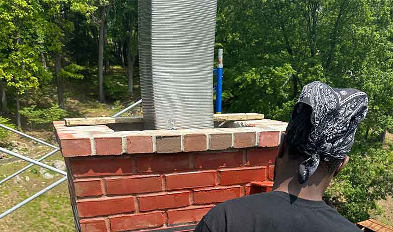
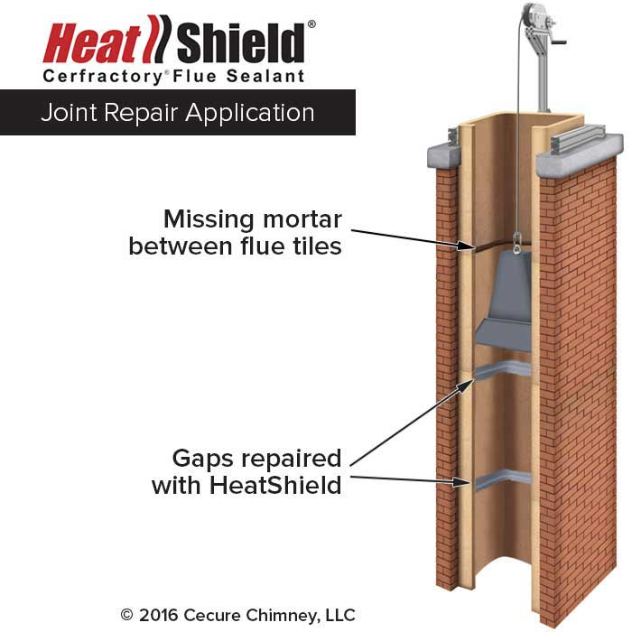
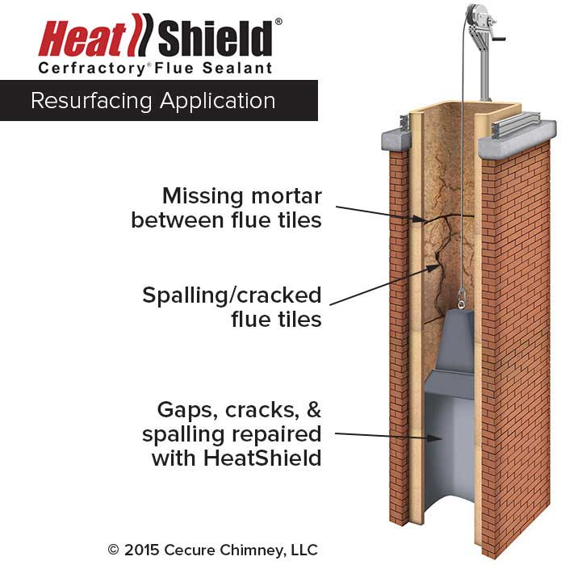
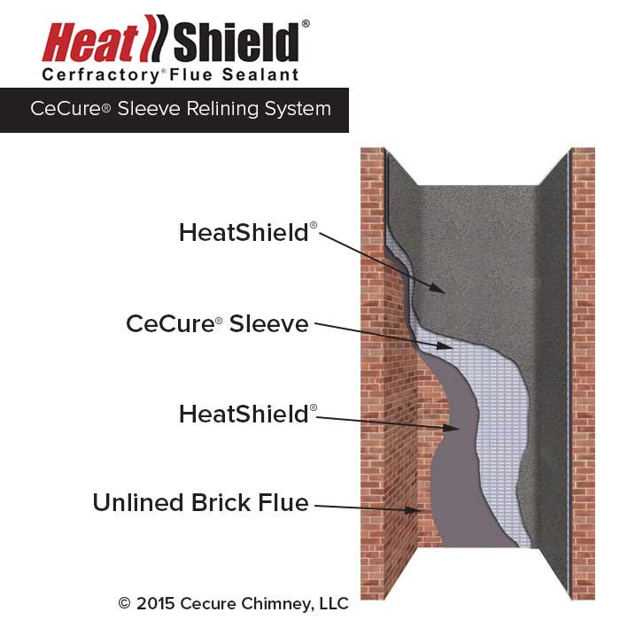

As a full-service, licensed, and insured chimney company, our team are your local experts for everything concerning your fireplace and chimney. Whether you’re installing a new appliance, need utility flue relining, or believe you need a chimney relining service, trust us to take care of it in Morristown, Chatham, Madison, North Haledon, and more.
We only hire professional chimney techs who are CSIA certified and place a high value on serving our community with kindness and transparency.
Request an Appointment
A chimney liner is constructed of materials such as terra cotta clay and various metals, and is designed to protect the inner walls of your chimney against high temperatures and dangerous gases while streamlining airflow. Tests by the National Bureau of Standards concluded that building a chimney without a liner was “little less than criminal” because of how quickly surrounding woodwork could catch fire.
Like all home appliances, your liner can deteriorate over time — especially if maintenance is neglected. Some older homes (pre-1940s) may not have a liner at all. Operating an unlined or damaged system can lead to:
HeatShield® is a chimney liner repair solution that coats the inside of your liner with a uniquely formulated “Cerfractory” sealant of ceramic and refractory materials. It offers an alternative to complete liner replacement for chimneys lined with terra cotta clay tiles, in three application methods:



Joint Repair seals damaged mortar joints between clay tiles. Resurfacing applies the sealant throughout the entire flue liner for more significant damage. CeCure Sleeve Relining is the most intensive repair, lowering a stainless-steel-reinforced, ceramic-insulated panel into the chimney—ideal after a chimney fire.
Absolutely — it’s one of the best replacement liner options available. Made to last and highly versatile, the right grade or alloy matters greatly because different fuels create different gases and byproducts. A liner designed for wood could be burned through by the higher acidity of gas smoke, which is exactly why you should work with a professional when choosing your relining solution.
It depends on liner material, frequency of use, and the overall well-being of the chimney. A well-cared-for clay liner may last anywhere from 15 to 50 years. Stainless steel liners are similar — which is another reason annual inspection and sweeping is so important.
If your fireplace is acting up, don’t use it — call the team at Garden State to check it out.
Call us at 973-519-0802 or book your appointment online. We can’t wait to work with you.